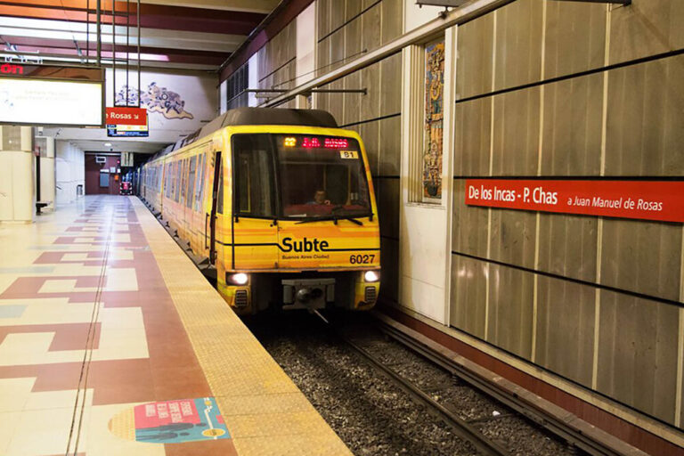
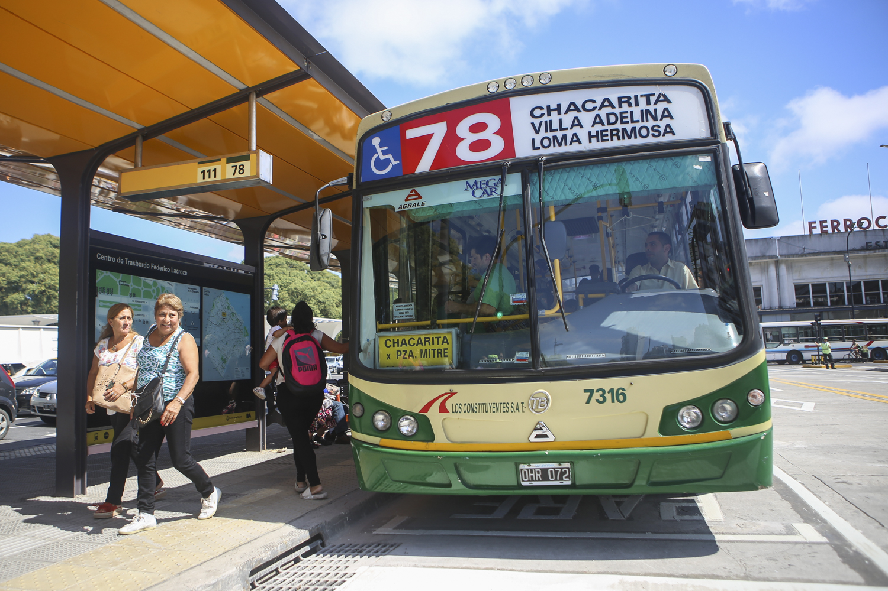
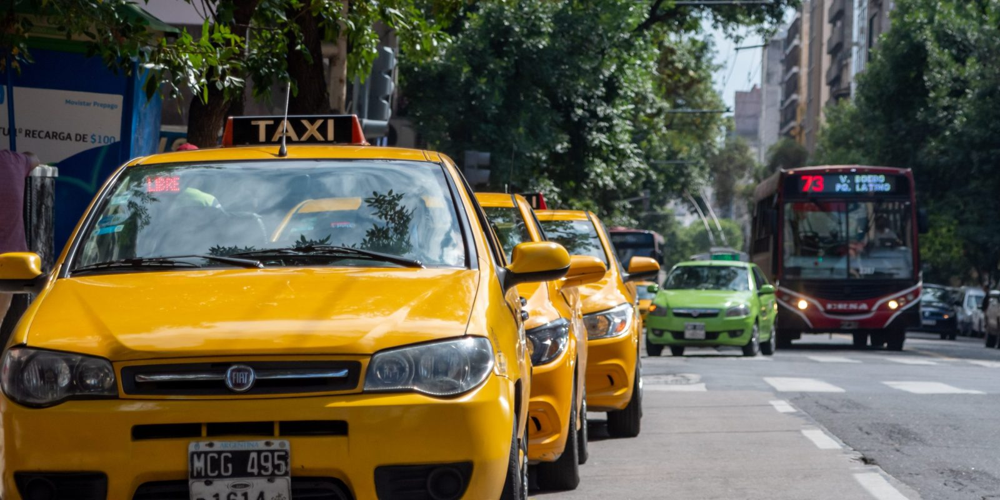
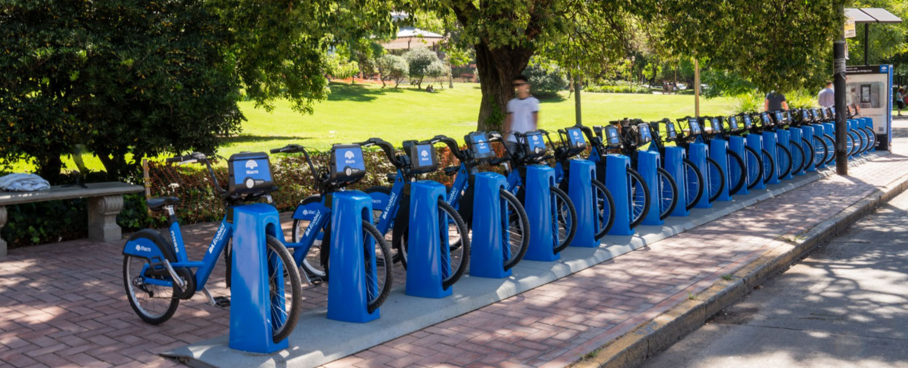

Transportes en Estación Lacroze
Conocé todos los medios de transporte que conectan la estación con la ciudad y el Gran Buenos Aires.

Tren Urquiza
Conectá con el Gran Buenos Aires a través de la línea Urquiza, que recorre los principales centros del conurbano.
Ver más
Subte Línea B
Accedé rápidamente al microcentro y al centro porteño mediante la Línea B del subterráneo.
Ver más
Colectivos
Más de 20 líneas de colectivos recorren la zona, conectando barrios y localidades cercanas.
Ver más
Taxis y Remises
Encontrá paradas oficiales de taxis y remises para un traslado seguro desde y hacia la estación.
Ver más
Movilidad Sustentable
Usá bicicletas públicas y monopatines eléctricos como alternativa ecológica para moverte por la ciudad.
Ver más